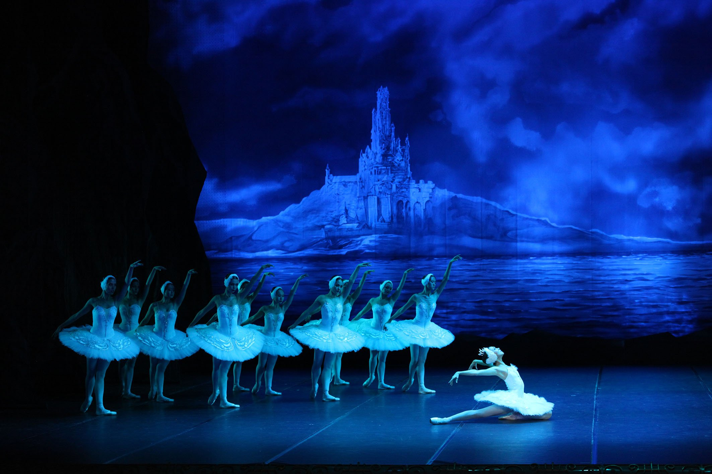

Teatro
Teatro
Notre dame de Paris
Teatro di Verdura, Palermo
Da 24 Ago 2026 al 6 Set 2026

Celebre balletto che narra la tragica storia d'amore tra il principe Sigfrido e la principessa Odette.

Il lago dei cigni è uno dei balletti più celebri della storia della danza classica. La musica è stata composta da Pëtr Il'ič Čajkovskij e la prima rappresentazione risale al 1877 al Teatro Bol'šoj di Mosca. Il balletto racconta la storia del principe Siegfried e della principessa Odette, trasformata in cigno da un maleficio del mago Rothbart. Tra amore, inganni e sacrificio, i protagonisti cercano di spezzare l'incantesimo. Grazie alla sua musica emozionante, alle coreografie eleganti e alla celebre "Danza dei piccoli cigni", Il lago dei cigni è considerato uno dei capolavori più importanti del repertorio classico.
Catania
Teatro Metropolitan
22 Gen 26
Palermo
Teatro Massimo
25 Gen 26
Data:
22 Gennaio 2026
Luogo:
Teatro Metropolitan • Catania, 95121
Capienza:
1.780 persone
I biglietti non sono venduti direttamente su U Spettaculu. Scegli la piattaforma che preferisci.
Teatro
 Teatro
Teatro
 Teatro
Teatro